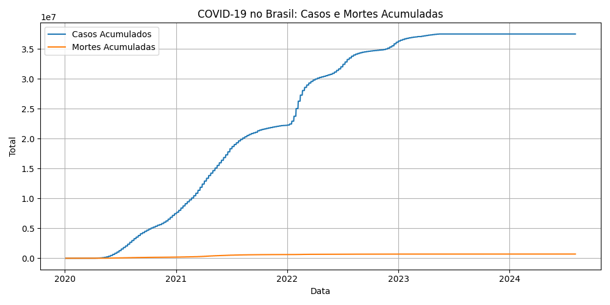
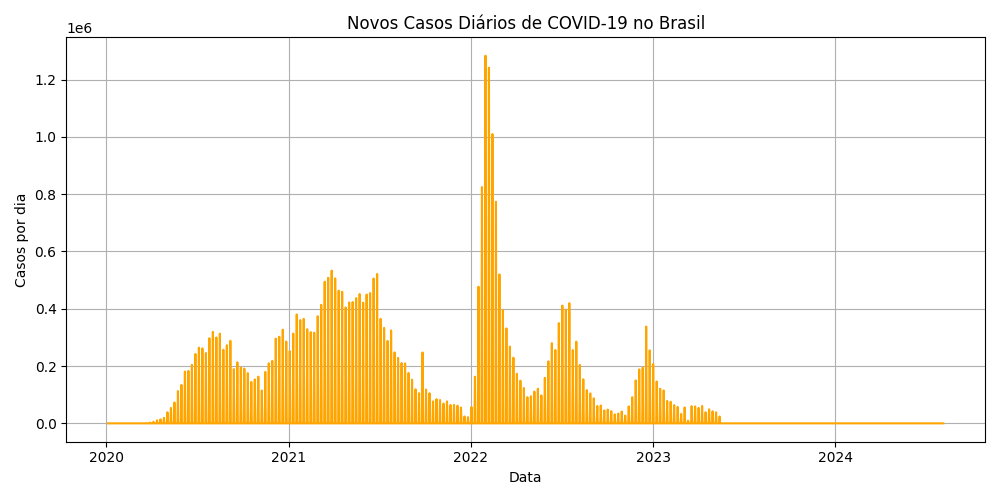
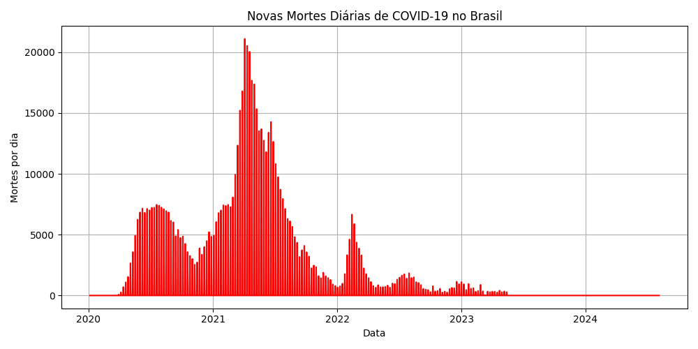
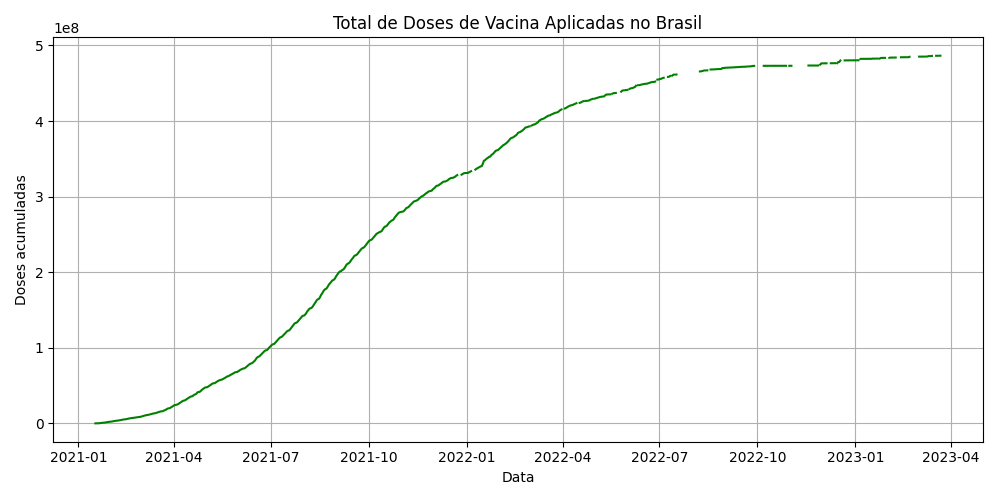

📉 Análise Histórica
Os gráficos abaixo foram gerados a partir dos dados do projeto Our World in Data, com informações até agosto de 2024.
   📊 Dados Atuais (atualização automática)
Os gráficos a seguir são atualizados automaticamente diariamente via GitHub Actions com dados do projeto wcota/covid19br.